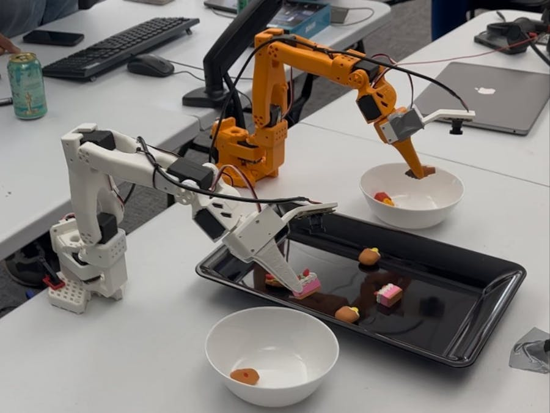

Overview of the Project
- Introduction
- Project Motivation
- Design & Architecture
- Step-by-step Build-up
- Results & Demonstrations
- Future Improvements(TODO)
Introduction
The LeRobot project has recently aroused my interest in domestic robots. The goal of this project is to build a low-cost robot platform that could be used to easily prototype and test various domestic robot applications. This project, XLeRobot, uses 2 x 6-DOF SO101 robot arms as the main manipulators, mounted on an IKEA Raskog trolley as the mobile base. This makes it possible to build it anywhere in the world, and for a very low cost (less than 800 Euros). The project involves both hardware assembly and software development, allowing me to learn and apply skills in robotics, programming, and system integration.
Project Motivation
First of all, this world is being reshaped by AI and robots. Secondly, I have plenty of time after work and on weekends. Thirdly, I want to learn more about robotics and AI. Finally, I want to build a robot that can help me with daily chores at home, so that the room is at least tidier than I left it, when I am back from work.
Design & Architecture
The manipulators: 2 SO101 Follower Arms
The moving base: The base from LeKiWi, mounted onto an IKEA Raskog trolley
Add-ons: Various sensors and cameras
Step-by-step Build-up
- 2025-06-13: First round of procurement
- 2025-08-17: Set Up the Follower Arm (TODO)
- 2025-08-24: Wired Leader-Follower Control (TODO)
- 2025-09-04: Build Up the LeKiWi
- 2025-09-11: Redesign the motor mount
- 2025-09-17: Redesign the RGBD Gimbal
Results & Demonstrations
- 2025-06-13: [RedNote] I get the SO101 robot arm to move! Though it doesn't move as expected...
- 2025-08-17: [RedNote] First Step! The wired leader-follower control of the SO101 robot arm
Future Improvements
...